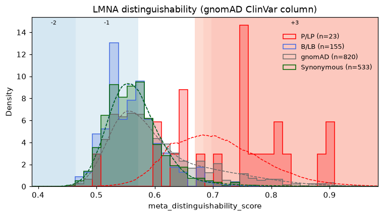
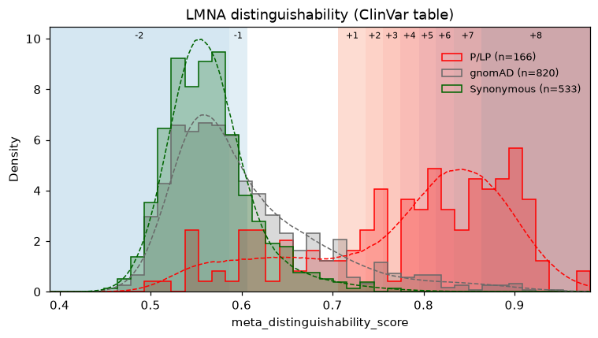

Evidence calibration (ExCALIBR)¶
Dataset.calibrate turns any per-variant score into ACMG/AMP evidence points, from −8
(benign) to +8 (pathogenic), by comparing where pathogenic and benign control variants
score. It is a native port of ExCALIBR (Zeiberg et al., Gene-based calibration of
high-throughput functional assays for clinical variant classification,
bioRxiv 2025.04.29.651326), the method used
for the calibrations in Tejura et al. (bioRxiv 2026, doi:10.64898/2026.02.14.705848).
It needs no JAX and does not depend on the upstream code.
import fisseqborn as fb
cal = (fb.OvwtScores.from_pipeline(run)
.correct("auroc_pooled")
.per_variant("auroc_pooled_corrected")
.calibrate("auroc_pooled_corrected",
gnomad="gnomAD_v4.1.2_ENSG00000160789.csv")) # the gene's gnomAD export
cal.df # + meta_excalibr_group, _groups, _lr, _posterior, _points, _oob
cal.calibration # the fitted Calibration
fb.CalibrationPlot(cal).save("vis/calibration.png")
cal.calibration.to_json("calibration.json")
Any numeric column works, e.g. meta_distinguishability_score on Profiles.
Inputs¶
One row per variant. calibrate raises if a meta_aa_changes label appears more than
once. Pool first with .per_variant() on OvwtScores or .median_across_batches() on
Profiles, or filter to one batch to calibrate it alone.
gnomAD (required). The CSV export of the gene's page on the gnomAD browser, downloaded with the "Export variants to CSV" button. It is the population sample the prior comes from.
- Matching to
meta_aa_changes.Protein Consequence(p.Arg123Trp) is converted to the one-letter label (R123W;p.Arg123TergivesR123*).- Nucleotide variants with the same protein change are collapsed into one: allele counts are summed, and the variant counts if any of its nucleotide variants passes.
- Rows without a single-codon protein change (intronic, UTR, frameshift) are dropped.
- Filters. A variant counts only with
Filters - joint == PASS.splice_max=0.2also drops variants withspliceai_ds_maxabove 0.2, the cutoff in Zeiberg et al. v2. Use it for assays that cannot see splicing effects.
ClinVar (optional). The table Dataset.clinvar reads: a variant column ("A12V")
and clinvar_clinical_significance.
- Calls that count. Pathogenic, Likely pathogenic and Pathogenic/Likely pathogenic count as P/LP; Benign, Likely benign and Benign/Likely benign count as B/LB. Uncertain, conflicting and not-provided calls are not controls.
- Review stars. With a
clinvar_review_status(ClinVar's text) orclinvar_starscolumn, records undermin_stars=1are dropped, as in the paper. Without one, the filter is skipped, with a warning. - Without a table (
clinvar=None), the gnomAD export'sClinVar Germline Classificationcolumn is used. It only covers variants gnomAD observed and has no review status, so a warning is logged. - Conflicts. A protein change whose records include both a pathogenic and a benign call is left out of the controls.
Control groups¶
| Group | From | Notes |
|---|---|---|
| P/LP | ClinVar table, else the gnomAD export's ClinVar column | |
| B/LB | ClinVar table, else the gnomAD export's ClinVar column | |
| gnomAD | gnomAD export, passing the filters | the unlabelled population sample |
| Synonymous | meta_is_control rule: synonymous, no :<tag> |
- Which variants can be controls. Only single-codon substitutions; multi-codon (
|) labels and:<tag>pseudo-variants never are. - Overlapping groups. A variant can be in several groups (a ClinVar variant gnomAD also observed is in both). As in the paper, each bootstrap iteration assigns it to one of them at random.
- Group columns.
meta_excalibr_groupslists every group a variant is in.meta_excalibr_groupnames the first of P/LP, B/LB, Synonymous, gnomAD.
Method¶
Each of n_bootstrap iterations (1000 in the paper):
- Resample. Assign each multi-group variant to one group. Resample every group with replacement at its own size, holding out the variants not drawn.
- Fit the mixture. All groups share the same skew-normal components (2 or 3); each
group has its own mixing weights.
- Fit by EM, keeping the best of
n_restartson held-out likelihood. - A density constraint between neighboring components keeps the likelihood ratio monotone wherever the components carry real density.
- Fit by EM, keeping the best of
- Prior. Estimate the prior probability of pathogenicity on the gnomAD scores by label-shift EM.
- Local likelihood ratio. Take
LR+(s) = f_P(s) / f_B(s)on a grid of scores. f_Bis the benign mixture: B/LB, synonymous, or by default (benign_method="avg") their averaged weights, which is steadier when B/LB is small.
Across iterations:
- Number of components. With
n_components="auto"the run fits 2 and 3 components and keeps 3 only if it beats 2 on held-out likelihood in at least 95% of iterations. - Prior. The calibration's prior is the median over iterations.
- Points. Each point is a fixed step in likelihood ratio:
ppathogenic points needLR+ ≥ C^(p/8), andpbenign points needLR+ ≤ C^(−p/8).Cis the Tavtigian constant for the prior: the value that best satisfies the ACMG/AMP combining rules (350 at a prior of 0.1, so each point is about a 2.08× step).- Pathogenic points use the 5th percentile of
log LR+across iterations and benign points the 95th, so unstable fits give less evidence. - The ranges are then made one-sided: one range per point, the strongest point extended to the end of the score axis.
- Direction.
direction="auto"takes the direction from which end the pathogenic controls sit at.- Bidirectional assays (pathogenic at both ends) are detected from the fits and given evidence on both sides.
"lower_pathogenic","higher_pathogenic"and"both"force it.
- Out-of-bag points. Each control variant's points use only the iterations that held it
out (
meta_excalibr_oob), so the ClinVar controls are not scored by models fit to them. Keep this on whenever the score was tuned against ClinVar. - One control class. With only pathogenic, or only benign and synonymous controls, the missing class is recovered from gnomAD (positive-unlabeled / negative-unlabeled), with a warning.
Columns added:
| Column | |
|---|---|
meta_excalibr_group, meta_excalibr_groups |
control group(s) |
meta_excalibr_lr |
median bootstrap LR+ at the variant's score |
meta_excalibr_posterior |
posterior probability of pathogenicity at the calibration's prior |
meta_excalibr_points |
evidence points, −8 to 8 (null without a score) |
meta_excalibr_oob |
the points are out-of-bag |
The Calibration¶
cal.calibration holds the thresholds and everything that produced them:
- Fitted values.
point_ranges(score intervals per point),prior,tavtigian_c,n_components,direction,mode. - Curves. The likelihood-ratio curves (
grid,log_lr_low/_median/_high). - Run details. The
group_counts, every valid bootstrap fit, the settings andseed. - Health.
reliable, with the reasons inwarnings.
c = cal.calibration
c.thresholds() # {1: score where +1 begins, ..., -1: ..., None if never reached}
c.points([0.31, 0.62]) # score new values
c.to_json("calibration.json")
# later, without refitting:
other = fb.Dataset.read("new_scores.parquet").apply_calibration("calibration.json")
Results depend only on seed, not on n_jobs.
Worked example: LMNA¶
LOBO distinguishability scores from notebooks/2026-08-28/ovwtlobo were calibrated
against the gnomAD v4.1.2 LMNA export. The run used 100 bootstrap iterations, which took
3–4 minutes on 8 cores:
profiles = fb.Profiles(pl.read_parquet("distinguishability.parquet")) # one row per variant
cal = profiles.calibrate("meta_distinguishability_score",
gnomad=GNOMAD_CSV, # gnomAD_v4.1.2_ENSG00000160789_*.csv
clinvar=None, # or CLINVAR_PATH
n_bootstrap=100)
gnomAD ClinVar column (clinvar=None) |
clinvar/clinvar_converted.parquet |
|
|---|---|---|
| Controls (P/LP, B/LB, gnomAD, synonymous) | 23, 155, 820, 533 | 166, 1 (dropped), 820, 533 |
| Benign reference | B/LB and synonymous averaged | synonymous only |
| Components (support for 3) | 2 (0.64) | 3 (0.98) |
Prior, C |
0.24, 95 | 0.13, 235 |
| Pathogenic evidence | +1 from 0.669, up to +3 from 0.698 | +1 from 0.706, up to +8 from 0.864 |
| Benign evidence | −1 below 0.572, −2 below 0.464 | −1 below 0.607, −2 below 0.586 |
Higher distinguishability is pathogenic, and both runs detect it (direction
"higher_pathogenic").
- gnomAD ClinVar column. Few pathogenic controls are in gnomAD, so the pathogenic likelihood ratio is uncertain and evidence stops at +3.
- ClinVar table. It has 166 P/LP variants but only one benign call, so that group is
dropped and synonymous variants serve as the benign reference.
- The pathogenic side then reaches +8.
- The table has no review status, so neither run applies the paper's one-star filter.


Out-of-bag points can exceed the calibration's ranges. A control variant's out-of-bag points come from its own subset of fits, with that subset's median prior. A few gnomAD variants in the first run get +4, although the full calibration stops at +3.
Limits¶
- Small control groups. A control group with fewer than 5 scored variants is dropped
with a warning, and below 10 the result is flagged
reliable=False. LMNA has few missense controls in gnomAD v4.1.2, so its point ranges are wide and its strongest evidence levels are rarely reached. Readwarningsbefore using the points. - The gnomAD-only ClinVar fallback sees only variants gnomAD observed, so it has fewer controls than ClinVar itself, and it cannot apply the one-star review filter the paper uses. Pass a ClinVar table with review status when you can.
- Run time. EM runs on the CPU, in parallel across bootstrap iterations.
- 100 iterations on about 1,600 controls take 1–2 minutes on 8 cores, with 2 and 3 components both fit.
- The published setting (1000 iterations,
n_restarts=8) takes about ten times as long. Usen_bootstrap=100while exploring and 1000 for anything reported.
- Differences from upstream ExCALIBR. Most of these are visible in
fisseqborn.calibration._coreand_mixture.- Fixes: the EM log-likelihood uses log mixing weights (upstream adds the raw
weights), and
Deltauses Lin et al.'s exact M-step. - Initialization: components are shrunk until the density constraint holds, as the paper describes, rather than by upstream's KL-divergence optimization.
- One control class: the prior uses upstream's mixture-proportion boundary estimator, not the EM the supplement describes. That EM, as written, does not converge to the mixture proportion.
- Not ported: only upstream's default "liberal" monotonicity post-processing is ported, and its pathomechanism and multi-assay options are not.
- Agreement: on upstream's BRCA1 (Findlay et al. 2018) example, the points agree with
upstream's published calibration to within one at every score. The prior is 0.19
against upstream's 0.23. Out-of-bag evidence agrees with the ClinVar controls for 98.8%
of determinate calls (the paper reports 97.9% across genes). The regression is
packages/fisseqborn/tests/integration/test_calibration_upstream.py.
- Fixes: the EM log-likelihood uses log mixing weights (upstream adds the raw
weights), and